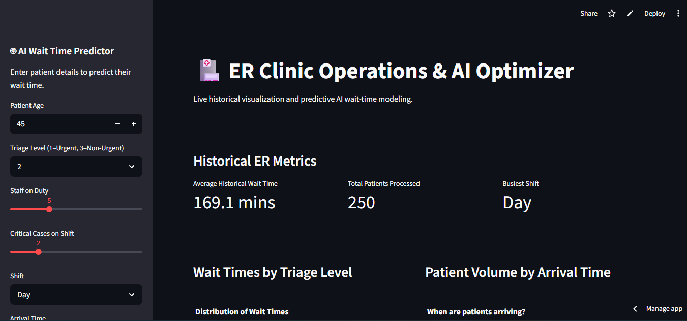
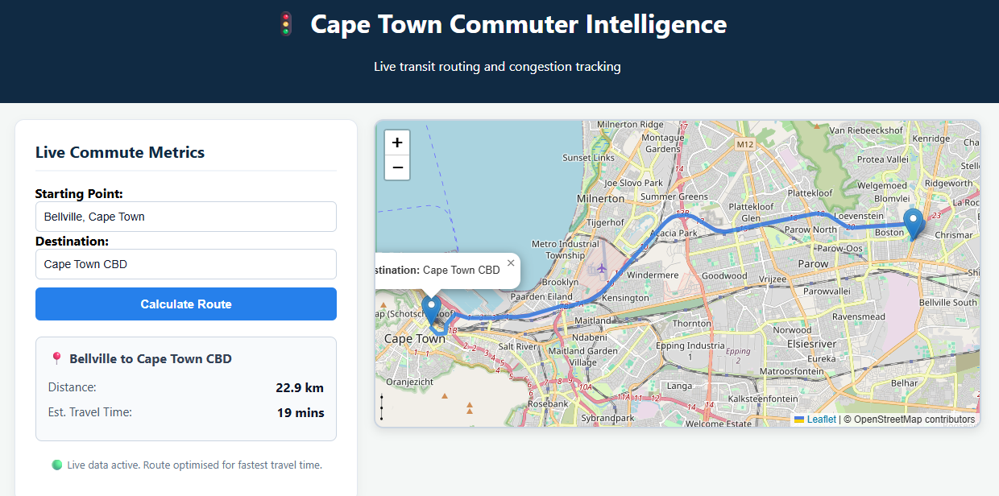
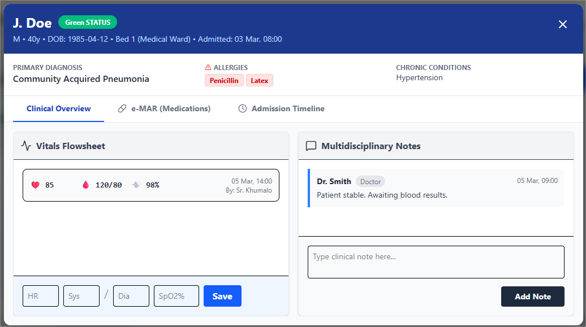
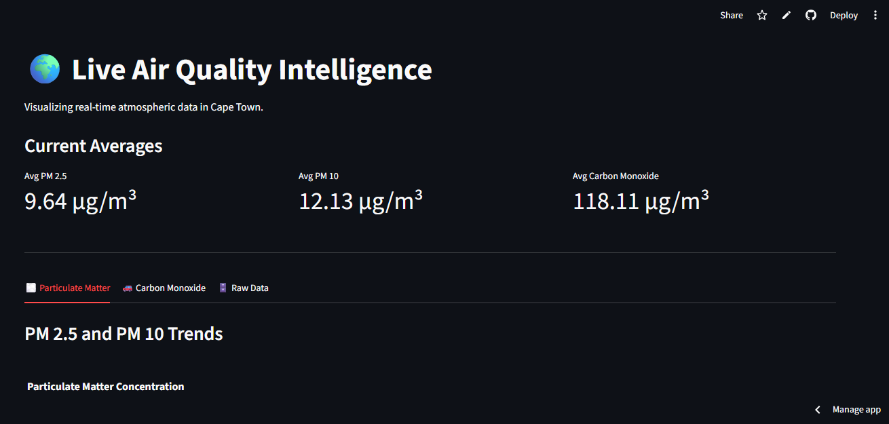

My collection of full-stack applications and predictive data models.

The Problem: Unpredictable ER wait times cause patient frustration and inefficient staff allocation.
The Solution: Engineered a Random Forest machine learning model to predict wait times within 1.17 minutes of accuracy, deployed via a live Streamlit dashboard for real-time triage assistance.

The Problem: Navigating complex urban environments requires accurate, real-time spatial data routing.
The Solution: Built an interactive mapping engine integrating Nominatim and OSRM REST APIs to calculate optimal driving routes, distances, and travel times across South Africa.

The Problem: Clunky Electronic Health Records (EHRs) cause administrative burnout and cognitive overload for frontline healthcare workers.
The Solution: Designed a responsive, state-managed React prototype with role-based access and an intuitive e-MAR to streamline clinical workflows and patient care.

The Problem: Accessing real-time, localized environmental health hazard data is often fragmented and hard to read.
The Solution: Developed a dynamic dashboard that consumes live APIs to fetch, process, and visualize real-time air quality indices and weather conditions globally.